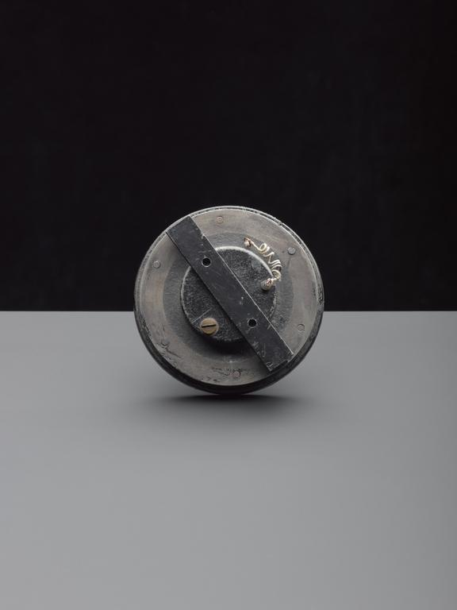

Thomas Alva Edison
He is an american inventor and businessman, who has been described as One of America's Greatest Inventor
Edison, Thomas Alva
Lifetime Events
- 1847, Born on 11th of November in Milan, Ohio
- 1863, He found his first job as a telegrapher.
- 1868, Edison began to change his profession from telegrapher to inventor. The same year, he received his first patent on an electric vote recorder.
- 1869, Finding little demand for the machine, he moved to New York City, where he began his career as an inventor and developed his first successful invention, an improved stock ticker called the "Universal Stock Printer".
- 1871, He relocated to Newark, New Jersey, where he set up a small laboratory and manufacturing facility. At the same year, he married to Mary Stilwell, who bore him three children
- 1877, He expanded his operation and moved to Menlo Park, New Jersey, developed the carbon transmitter, a device that improved the audibility of the telephone by making it possible to transmit voices at higher volume and with more clarity. That same year, one invention that brought him his first round of fame and catapulted his status to greater heights was the phonograph.
- 1878, He formed the Edison Electric Light Company in New York City and began research and development.
- 1879, He demonstrated his incandescent light bulb for the first time. The first commercial application of the bulb was in Columbia, the new streamer of Oregon railroad and Navigation Company.
- 1880, After attaining the patent for the light bulb, he founded the Edison Illuminating Company, with a motive of delivering electricity to provide power and light the cities of the world. The company’s first investor owned electric utility was set up at Pearl Street Station.
- 1883, In Roselle, New Jersey, witnessed the first standardized incandescent electric lighting system employing overhead wires.
- 1884, The tragic death of his wife.
- 1886, He married again for second time to Mina Miller and moved to West Orange, New Jersey
- 1887, There were about 121 power stations established by the US that delivered electricity to customers. The other inventions that he worked upon during this time were fluoroscopy, two-way telegraph, kinetoscope, and so on. He then initiated an industrial research laboratory in West Orange, New Jersey, which formed the base of the primary research laboratory for the Edison lighting companies.
- 1891, Working with William K.L. Dickson, Edison succeeded in constructing a working motion picture camera, the Kinetograph, and a viewing instrument, the Kinetoscope, which he patented.
- 1907, On his sixtieth birthday, Edison announced his intention to "give up the commercial end . . . and work in my laboratory as a scientist.
- 1912, Automaker Henry Ford asked Edison to design a battery for the self-starter, which would be introduced on the iconic Model T.
- 1915, The federal government asked Edison to head the Naval Consulting Board, which examined inventions submitted for military use. Edison worked on several problems, including submarine detectors and gun location techniques.
- 1918, After years of heated legal battles with his competitors in the fledgling motion-picture industry, Edison had stopped working with moving film.
- 1928, in recognition of a lifetime of achievement, the United States Congress voted Edison a special Medal of Honor.
- 1929, the nation celebrated the golden jubilee of the incandescent light.
- 1931, He died, after suffering from complications of diabetes, on 18th of October. He was buried behind his home in Glenmont, West Orange, New Jersey.
It is his discoveries and inventions that became the foundation of industries and made life blissful for the human race.
vote recorder

carbon microphone
Edison with Phonograph
Replica of the 1st electric lightbulb